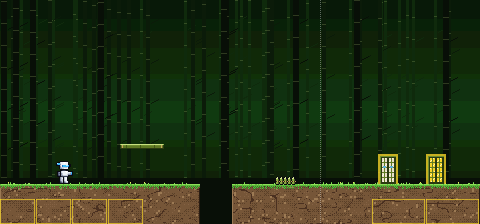
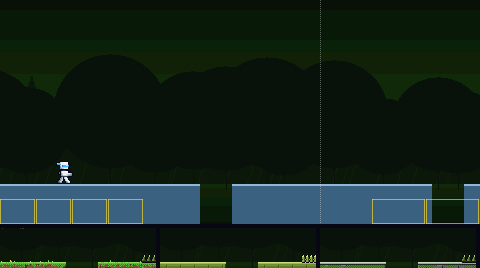
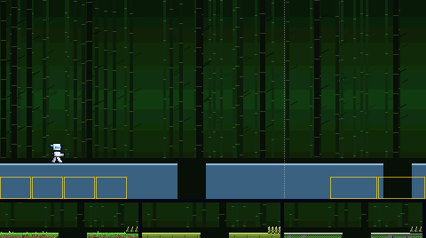
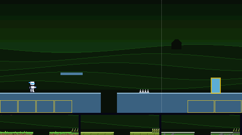
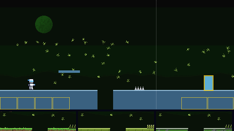
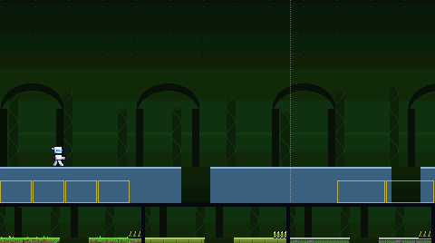
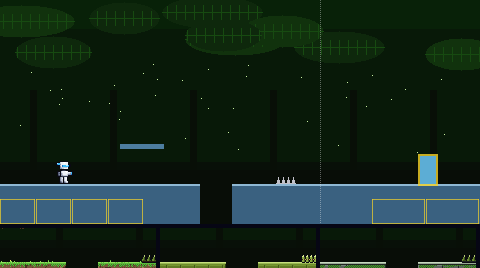
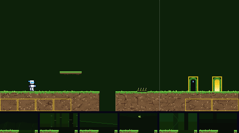
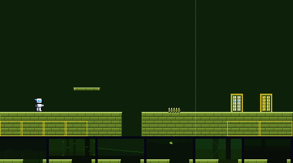
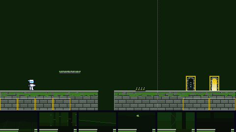

The way to Thorn Man's door. Six backdrops, and three materials (each a floor, platform, spikes, boss door and exit door), all built from his colours. Batch 1 of 3.
Picked by the owner on 5 Nov 2026, in their words: "2b including platform as it currently is, but the ground uses the ground from A meadow turf."
So: backdrop 2, the bamboo grove; from material B, the bamboo platform as it is, the bamboo stakes and the paper sliding doors; and from material A, the meadow turf ground. Nothing was redrawn. In the game the grove scrolls slowly as you run, its three depths of stalks each at their own speed, as you answered; its picture below now moves. The other variants are kept as they were offered. Batch 1 is in the game.
Backdrop 2 behind the meadow turf ground, with material B's bamboo platform, stakes and paper doors, and the player standing still. The boss door is on the left, the exit door on the right.

Each is shown behind today's plain pieces, so only the backdrop changes. The strip under it is its pit edge with floors A, B and C in front. The three marked MOVING scroll in layers, the far ones slower; their pictures move.






Each shows the floor with a pit, a platform, spikes, the boss door (left) and the exit door (right), in front of today's flat colour. The strip under it is its pit edge against backdrops 1 to 6. The contrast numbers are the worst against any of the six; the game asks at least 2 for the ground, 4.5 for its lit edge and 4.5 for the white player on it.


